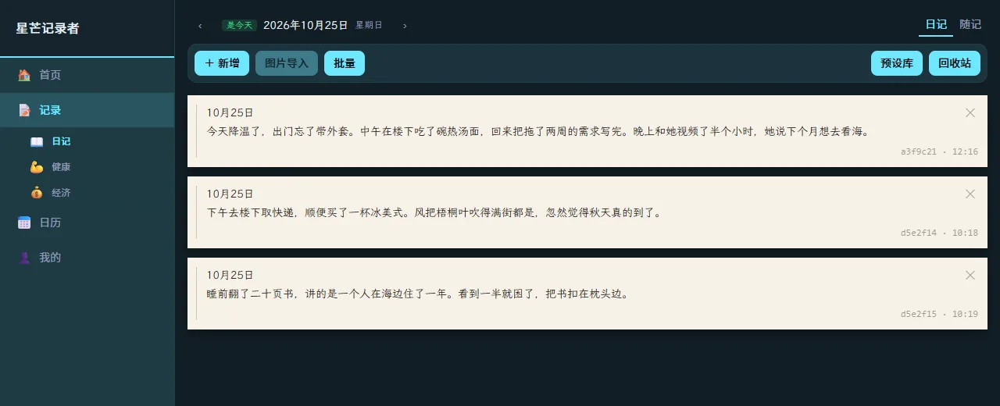
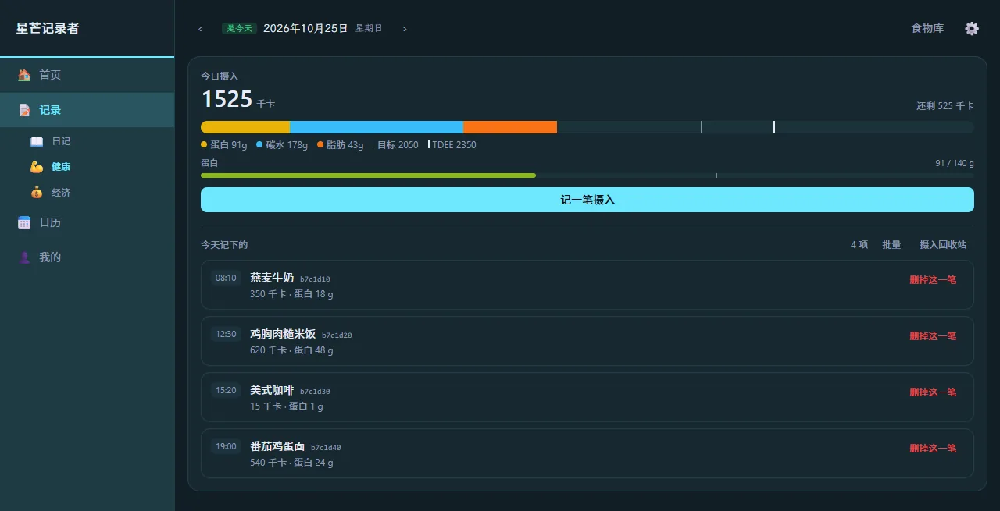
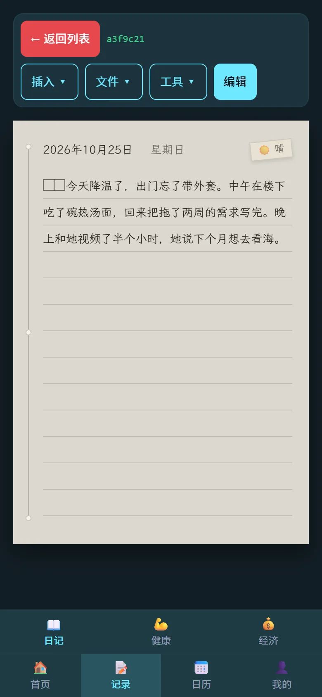

日记
随手记一句、按天翻看，也能一次导入整页手写照片，让 AI 认成文字。
已可用功能
日记和健康已经能天天用，财务和日历还在路上——没做完的功能，我们不会说它做完了。
随手记一句、按天翻看，也能一次导入整页手写照片，让 AI 认成文字。
已可用TDEE、身体档案、食物库和每日摄入，热量与蛋白都算得清清楚楚。
已可用六套主题模式配六种主题色，深浅冷暖都能调到顺眼；连纸上那支笔的颜色也跟着走。
已可用每一笔收支，都记在同一本本子上。
建设中把日子摊开看：哪几天写了，哪几天空着。
建设中AI 整理
那天发生了什么、当时是什么心情——你不用写得完整，AI 会按你选的口气重组，确认之后才写进去。
10.24 阴 早上去医院拿报告，医生说没事，回来的路上买了个红薯。
今天去医院拿体检报告。医生翻了两页，说各项都正常，让我别老熬夜。出来的时候天阴着，风有点凉，在路口买了个烤红薯，捧在手里一路暖到家。
应用不附带 AI 额度和 Key：模型与费用都在你自己的账号下，Key 只存在本机设置里。
截图
没有花哨的仪表盘，一天就是一张纸，翻过去就是前一天。



隐私
打开就能写。没有账号，也就没有找回密码那套流程。
我们不做服务器，也没有任何一条记录会被上传到我们这里。
一次导出 Markdown、纯文本或完整 JSON；桌面上数据就是一个能复制的文件。
只有你点「AI 整理」时，那一天的正文才会发给你自己配置的模型服务；其余记录不出本机。
下载
0.5.0 是早期版本，功能还在长，数据格式也可能变——重要内容记得先导出备份。
双击安装，开始菜单里就是它。桌面端数据存成 SQLite，可以直接复制走。
侧载安装，需要允许「安装未知来源应用」。手机上是同一套界面，数据留在本机。
两个仓库放的是同一份安装包，哪个快就用哪个。